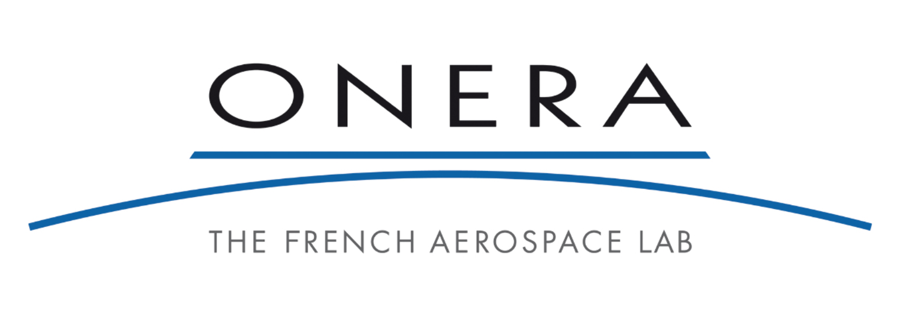
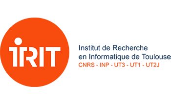
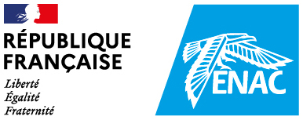
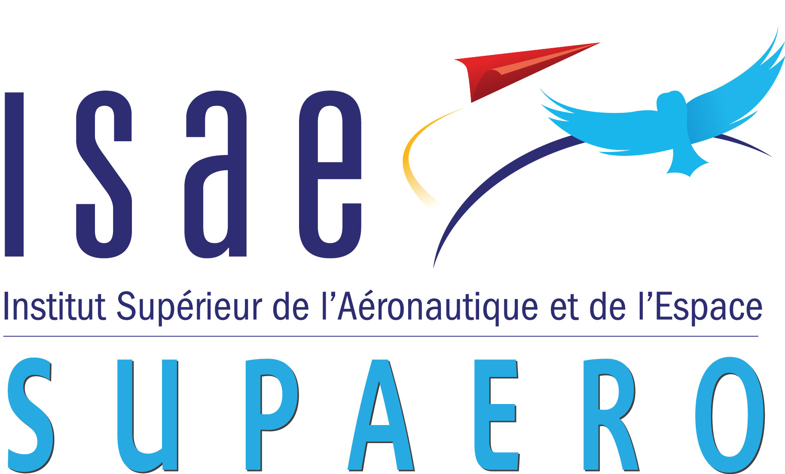
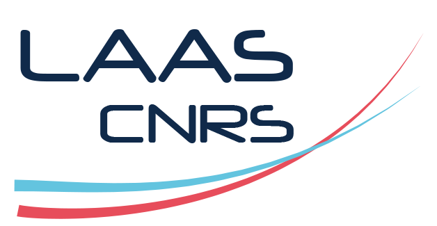

Recherche et animation scientifique autour de l’intelligence artificielle embarquée à Toulouse





Le défi "Embarquabilité de l'IA" s’inscrit dans le cadre de l'institut ANITI de Toulouse et de la chaire CertifEmbAI – Certification of Machine Learning-based Systems . Le défi réunit les chercheurs toulousains du LAAS, du IRIT, de l’ENAC, de l’ISAE, de l’ONERA et d’autres établissements, tous engagés dans les travaux autour de l’IA embarquée.
Liste de diffusion :
Pour vous inscrire ou diffuser une information, envoyez un email à :
defi-ia-embarque@groupes.renater.fr